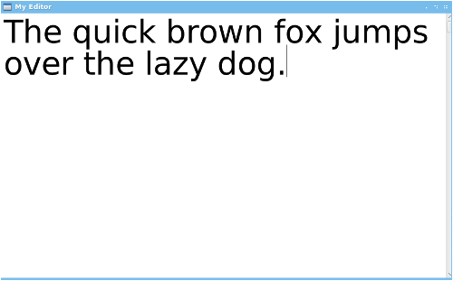

Seiya Ono
seiya.ono12@gmail.com | (949) Two Seven Eight - Six Four Four Three | github
Home | Projects | Builds
Projects
CS61A Projects
Hog
- A mathematical, dice rolling based game

Maps
- Webapp that cuts a map into sections based off of food preference. Uses k-means to determine cluster centers for restaurants that the user likes.

Ants
- Game similar to Plants vs Zombies, where there are ants that use food to fight against an onslaught of Stanford bees.

Scheme
- Python backboned scheme interpreter.

CS61B Projects
NBody
- Planetary orbit simulation.

Array / Linked List Double Ended Queue
- Implmented the Array and Linked List Double Ended Queue. API included addFirst, addLast, isEmpty, size, printDeque, removeFirst, removeLast, and get.
Editor

Bear Maps
- Google Maps-like mapping using OSM. Has zoom, refocusing, and shortest paths implemented.